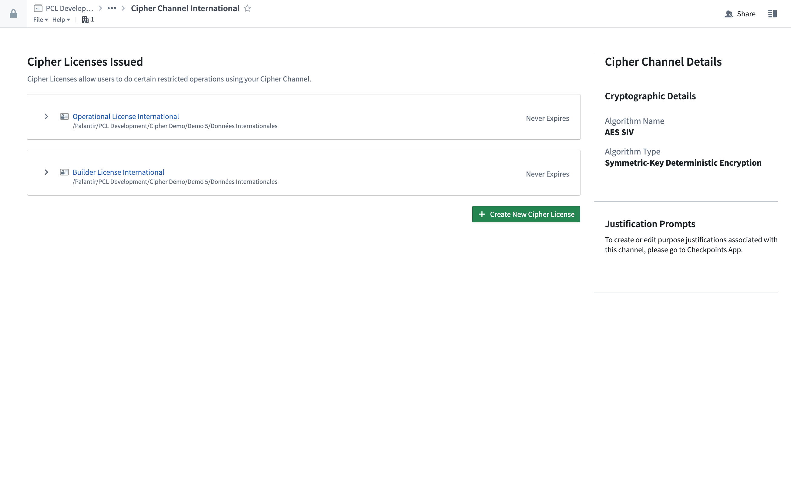
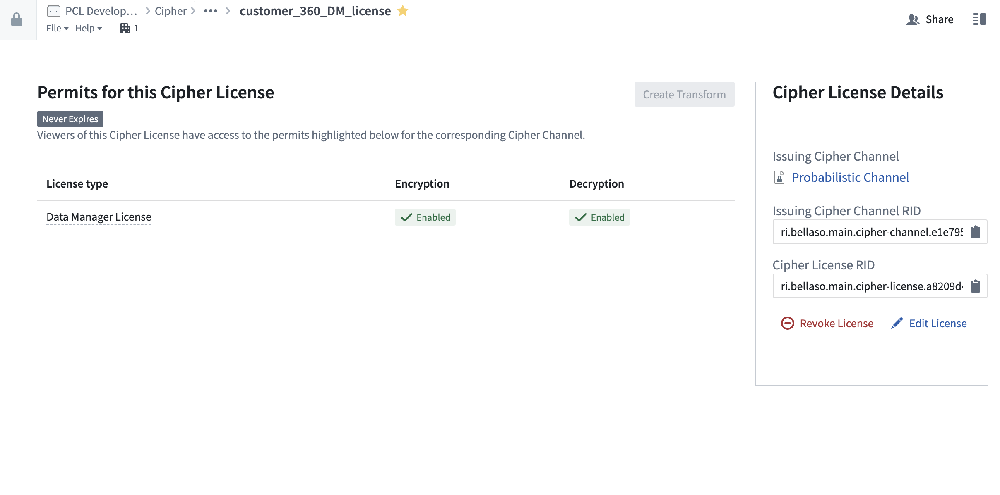

This page provides an introduction to the core concepts of Cipher.
A Cipher Channel is a Foundry resource that is visible in the filesystem workspace. A Channel serves as the starting point to create your encryption or hashing framework. Channels describe a specific protocol for obfuscating or de-obfuscating values, including either an encryption algorithm, parameters and values for the encryption keys, or a hashing algorithm and secret.
Learn how to create a Cipher channel.

A Cipher License is a Foundry resource accessible in the filesystem workspace that controls permissions to use cryptographic operations defined in a given Cipher Channel. Each License corresponds to exactly one parent Channel. Users with access privileges which allow them to view a License can use all the Channel operations the License allows. Like other Foundry resources, a License can be moved around and shared; however, note that any changes will affect user accessibility for the Channel associated with the License.
Learn how to issue a Cipher license.

Values encrypted with Cipher follow a format known as a Cipher-encrypted value which has the following syntax: CIPHER::<channel-rid>::<encrypted-value>::CIPHER. This format allows the Cipher service to gather the metadata needed to decrypt the value, providing the user has the right permissions.